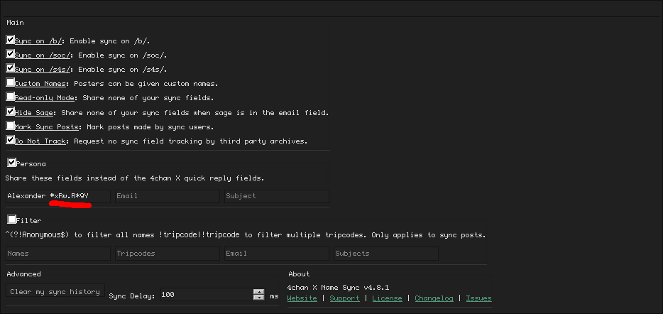

Tripcodes
Thanks to Alexander !KrysTaLpiA for this tutorial!
Tripcodes are a semi-secure way to prove your identity. You supply a passcode and a tripcode is appended to your name. Usually these appear as random strings of characters, but you can find vanity tripcodes with a bit of effort. Here's how:
Download the file at http://desktopthread.com/Tripcode_Explorer.7z
Extract the files to wherever. You can delete them once you're done, don't worry.
Open “tripexpl_en.exe”.
In the left pane with the giant text box, enter what you want your tripcode to show.
For instance, if I'm looking for tripcodes with the term “Krystal” in them (example; !KrysTaLpiA, !xXKRyStALE, !Krystal/W., etc), then enter “Krystal” into that box. You can also put in multiple search terms. If at the same time you want to look for tripcodes with the term “bluefox” in them (example; !WlBlUEFoXw, !b2bLUEfoXk, etc), press ENTER to put in your additional search term in a new line.
Once you're done with that, press ALT+T, and, without letting go of ALT, press O.
Basically copy whatever options I have enabled here. Your “number of threads” should ideally be equivalent to the number of logical cores your CPU has, but if you don't know what that is, set it to 4. Once you're done, click “OK”, and click the green “play” button, and just let your program run for anywhere between a few minutes to a few hours. It all depends on how many tripcodes you want to be able to choose from later. It's best not to use your computer while it's doing this.
If the program freezes and crashes at this point, change the “number of threads” earlier from 4 to 2 and try again. If it still freezes and crashes, then change it to 1 and try again.
Once you feel like you've run the program for long enough, press the green “pause” button on the top left:
At this point, you should have a list of tripcodes that the program has found for you:
1: This is the tripcode that other people will see.
2: This is the tripcode key that you enter into your name field.
3: This is the search term that matches that particular tripcode.
Look through column 1 to find a tripcode you like. In this example, I'm going to choose the tripcode “kTWFOxgJas”, which is the first on the top. This will appear as “!kTWFOxgJas “ when I enter it into 4chan. The tripcode key for this tripcode is “#xRw.R*9Y”. You can right-click the tripcode and click “Copy” to copy it.
Now, open 4chan Namesync and enter your tripcode right after your name.
Once done, press F5 to refresh and start posting with your tripcode.
Enjoy tripfagging.